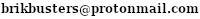

How to make money from open-source
21 July 2023
Read moreMarch 12 2022
After hacking the Fujifilm camera firmware, I got a cheap broken Fujifilm XF-1 and decided to perform my hacks on it. Read moreJul 30 2021
I recently got my hands on a cheap Fujifilm HS20 EXR. It's a pretty old camera (2012), but I thought it'd be a good way to practice my hacking skills. Read moreDec 8 2020
check out the previous postSeptember 21, 2020
James 3:16: For where jealousy and selfish ambition exist, there will be disorder and every vile practice. Read moreAug 1 2020
I have been creating YouTube tutorials for almost 5 years now, As I constantly see examples of how tutorials should not be made, I thought I should share a list of what I have learned over these years. Read moreApril 23 2020
Another testing post for Tinyblog.April 23 2020
This is a test post for my new blog software. Or whatever you want to call it. It uses my own bare bones PHP markdown parser. Read moreMonday, March 23, 2020
For the past 4 or 5 years, I have had many different usernames. So I thought I would write a story or something on how my username evolved over time. Read moreSunday, December 29, 2019
Now here's something nobody's interested in: I have managed to find the only surviving screenshot of pufflegamerz.doodlekit.com. That was my very first website that I created. https://1.bp.blogspot.com/-tUeR0LHVz5o/XgjzruMR1KI/AAAAAAAAFFo/8aFXD5r6NjIQU-Mcv9-zBERX5gBM8GkWgCLcBGAsYHQ/s400/oldwebsite.pngThursday, December 26, 2019
Corescript is a small "programming language" project I started in the summer of 2017. It was more of a hobby project that I made for fun rather than something somebody would seriously use. I worked on it until early 2019, abandoned it, then I started working on the Heb12 android app. The syntax for Corescript was meant to be very simple, and somewhat similar to MIT's Scratch. Read moreOctober 17, 2019
I have been using Windows for pretty much all my life. I remember using Windows XP in elementary school, with huge CRT monitors and Kid Pix. I have been using it for long over a decade now, and I have recently decided to switch. Read moreOctober 13, 2019
I remember writing my first few lines of code. Not only do I remember doing it, but I also have the exact file, untouched since the day I created it. It's not much, but pulling out a file I hadn't seen in years really made me want to share it. Read moreDecember 20, 2018
I've been on Roblox for 3 years now. https://www.roblox.com/users/102085027/profile The thing is, I quit uninstalled the game because of how strange the community is becoming.June 15 2018
So I had an old laptopMarch 31 2018
I just got a new PC about 2 weeks ago, and I love it. It has 8 gigs of ram, and an i5 2400 processor clocking a 3.1ghz. It has a 500gb SATA drive at 7200 rpm. Read moreMarch 1 2018
I think this is my third blog, so welcome. I chose Coding of the Cosmos since I am interested in space. If you want to see older posts see https://pufflegamerzstudios.wixsite.com/mysite-1December 2, 2017
PufflegamerzNovember 30, 2017
PufflegamerzNovember 11, 2017
Do you ever just sit there and stare at your screen thinking, "What am I going to do today?" Me too. As a result, I made a software idea generator. Download it here (For windows users only) https://pufflegamerz.github.io/projects/CodingIdea.htaNovember 11, 2017
VeryShort is my own url shortener. No strings attached. Use it at vs.nut.ccNovember 11, 2017
WebCraft is a second version of JScraft. You can break and place blocks. I am still working on it. https://pufflegamerz.github.io/webcraft/October 19, 2017
I started to experiment with the Html5 canvas today. After some fliddling, I came up with a mini 2D terrarian generator. Here it is:October 10, 2017
I have made a corescript program where I have put every single command there is in Corescript. You can see it here:October 9, 2017
For the past couple of months, I have been working on Corescript. I have just released 7.1, which you can access here. I started Corescript about 7 Months ago. The GUI has changed a lot. This new update mainly includes bug fixes.Contact me:
